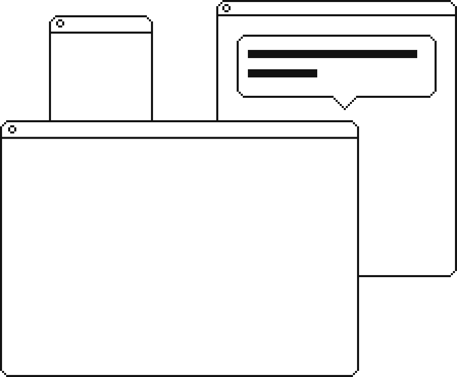
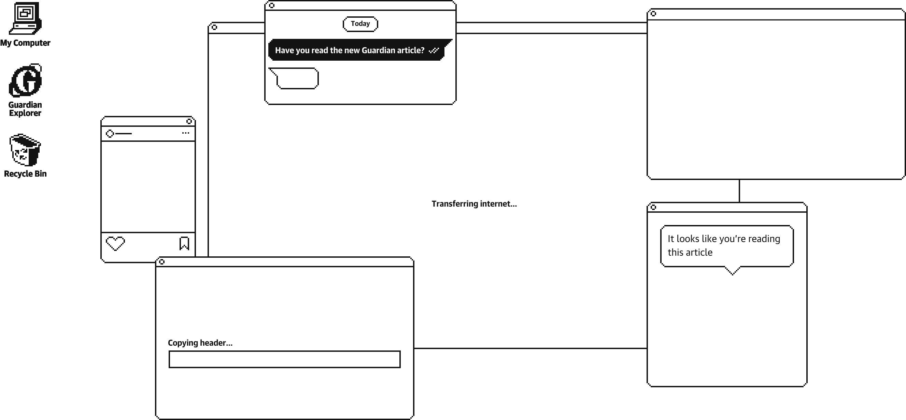
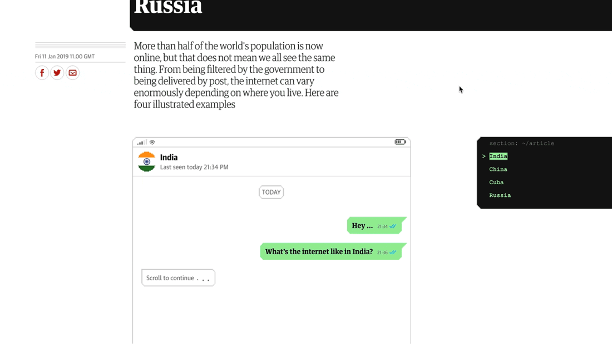

<!DOCTYPE html>
<html>
  <head>
    <meta charset="UTF-8" />
    <meta name="viewport" content="width=device-width, initial-scale=1" />
    <link rel="stylesheet" href="style/style.css" type="text/css" />
    <script src="handlebars-v4.1.2.js"></script>
    <script type="text/javascript" src="js/app.js"></script>
    <title>Frank Hulley-Jones</title>
  </head>

  <header class="logo logo-article">
        <a class="logo__link" href="/">
          <svg
            class="logo-image"
            xmlns="http://www.w3.org/2000/svg"
            width="316"
            height="128"
            viewBox="0 0 316 128"
          >
            <path
              class="logo__frame"
              fill="#333"
              d="M306 22h-19.7C274.5 8.5 257.3 0 238 0c-19.2 0-36.4 8.5-48.1 21.8C182.1 14.5 170.6 10 158 10c-12.6 0-24.1 4.5-31.9 11.8C114.4 8.5 97.2 0 78 0 58.7 0 41.5 8.5 29.7 22H10C4.5 22 0 26.5 0 32s4.5 10 10 10h7.9C15.4 48.9 14 56.3 14 64c0 35.3 28.7 64 64 64s64-28.7 64-64c0-8.6-1.7-16.8-4.8-24.3C140 34.6 147.8 30 158 30s18 4.6 20.8 9.7c-3.1 7.5-4.8 15.7-4.8 24.3 0 35.3 28.7 64 64 64s64-28.7 64-64c0-7.7-1.4-15.1-3.9-22h7.9c5.5 0 10-4.5 10-10s-4.5-10-10-10zM78 108c-24.3 0-44-19.7-44-44s19.7-44 44-44 44 19.7 44 44-19.7 44-44 44zm160 0c-24.3 0-44-19.7-44-44s19.7-44 44-44 44 19.7 44 44-19.7 44-44 44z"
            />
            <g class="logo__eyes" fill="#333">
              <circle cx="238" cy="64" r="12" />
              <circle cx="78" cy="64" r="12" />
            </g>
          </svg>
        </a>
  </header>

  <body>
    <div id="one-page">
    <script id="entry-template" type="text/x-handlebars-template">
      <div class="article">
          <div class="header">
              <div class="header-container">
                  
                  
                  
                  
                  
                  
                  
                  
                  
              </div>
            </div>
          <div class="introduction wrapper">
            <div class="grid">
              <div class="information">
                <div class="information__type">
                  <div class="information__meta">Type: </div><div class="information__data">Interactive</div>
                </div>
                <div class="information__year">
                  <div class="information__meta">Year: </div><div class="information__data">2019</div>
                </div>
                <div class="information__role">
                  <div class="information__meta">Role: </div><div class="information__data">Art Direction, Design, Illustration, Front-end</div>
                </div>
                <div class="information__link mobile"><a class="headline__link" href="https://gu.com/p/a2438">Live article</a></div>
              </div>
                <h1 class="headline gr-2">The internet but not as we know it<span><a class="headline__link" href="https://gu.com/p/a2438">Live article</a></span></h1>
                <h3 class="standfirst fr-2">
                  At the end of 2018 more than half of the world's population went online. Tim Berners-Lee shed a tear, whilst I spent 6 weeks trying to figure out how Chinese Microblogging worked and what references I could remember from the 90s.
                </h3>
                <h3 class="standfirst fr-2">
                  The brief for the project was: “What’s life look like online in India, Cuba, China and Russia? Make it as sexy and maverick as possible.”
                </h3>
                <h3 class="standfirst fr-2">
                Taking this as a green light to design something slightly crazy, we set to work; starting with India.
                </h3>
            </div>
          </div>
          <div class="content wrapper">
            <div class="grid__1-3 item">
              <div class="image image__background gr-3">
                <div class="image__container">
                  
                </div>
              </div>
            </div>
            <div class="grid item">
                <h2 class="text text__header grid__1-1">India</h2>
                <p class="text__body grid__2-1">India was a great place to start, as using mobile chat messages as a device lets users know this isn’t a regular news article and starts them scrolling</p>
            </div>
              <div class="item text text__inline"></div>
              
          </div>
      </div>
    </div>
  </div>
    </script>
  </body>
</html>
